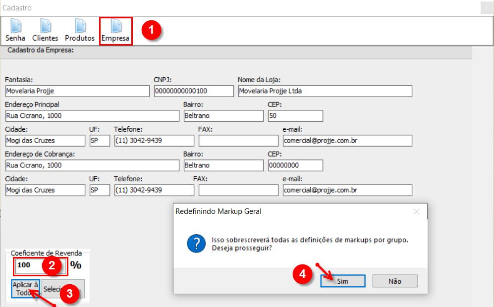

Mark-up ou Coeficiente de Reevenda é um Mark-up ou Coeficiente de Reevenda é um de um produto ou serviço para constituir o preço de venda. Partindo da ideia de custo mais preço ou preço margem.
1. Disponibilizamos duas formas para você aplicar o seu Mark-Up.
2. Para acessar tela de Mark-Up favor ir no 2. Para acessar tela de Mark-Up favor ir no ou simplesmente apertar o F2, selecione o botão "Empresa (1)", digite a senha padrão do sistema 123.
3. Para a Opção 01 - Unificadode Mark-Up digite o índice de sua escolha (2), na sequência clique em "Aplicar a Todos (3)" e prossiga finalizando em "Sim (4)". Neste caso o índice será acrescido igualmente em todas matérias-primas utilizados no projeto, tais como chapas, revestimentos, acabamentos, ferragens, embalagens e serviços.
4. Para a Opção 02 - Individualizado de Mark-Up clique em "Selecionar (2)", na sequência indique em cada grupo (3) o índice apropriado e, após o da codificação clique em "Aplicar (4)" e finalize em "Ok (5)". Neste caso o índice será acrescido em cada grupo conforme indicado nos grupos ferragens (acessórios, parafusos, minifix, pinos, dobradiças, corrediças, entre outros) chapas (mdf, mdp, vidros, entre outros) colas, revestimento (perfis de alumínio, fitas de borda, entre outros) e codificação (puxadores, aramados, trilhos de alumínio entre outros).

5. Se for necessário migrar de uma opção à outra sugerimos aplicar o índice 0% para zerar, igualando o preço de venda ao de custo, dessa forma você pode reiniciar o processo.